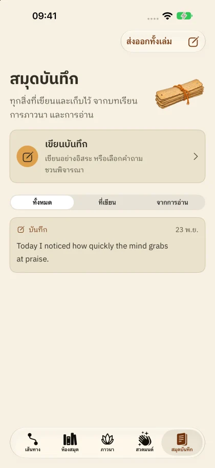

iPhone & iPad
Version 2.0 is available on the App Store. Version 2.1 adds English and changes the store name to คู่มือมนุษย์. It is awaiting Apple’s review.
Open the App StoreBuddhadāsa Bhikkhu · Suan Mokkh
Read Buddhadāsa Bhikkhu’s teachings, sit for a few minutes, and write down what you notice in daily life.

Inside the app

Choose from 14 learning paths. Try a short lesson and pick up where you left off.

Browse 331 books. Read 328 offline and open three online in the app. Highlight a passage, bookmark it or add a reading note.

Choose from eight guided practices or sit in silence. A circular timer shows the time remaining, with bells to mark the start and finish.

Follow 32 chants line by line and listen along wherever a recording is available.

Start with a reflection prompt or a blank page. Revisit earlier entries and export your writing.
Updated 26 November 2026
Free to use, with no ads or in-app account to create.
Version 2.0 is available on the App Store. Version 2.1 adds English and changes the store name to คู่มือมนุษย์. It is awaiting Apple’s review.
Open the App StoreVersion 2.0 (build 8) is in closed testing with Thai and English. If invited, sign in with the Google account on the tester list, opt in, then install from Google Play.
1. Join the test 2. Install from Google PlayPhotographer unknown. Courtesy of Santikaro and Liberation Park. Resized and cropped for this website. Wikimedia Commons · CC BY-SA 3.0
Made by Pondd. Thanks for spending a little time with คู่มือมนุษย์.
Tap the character or press Enter to change the dance.